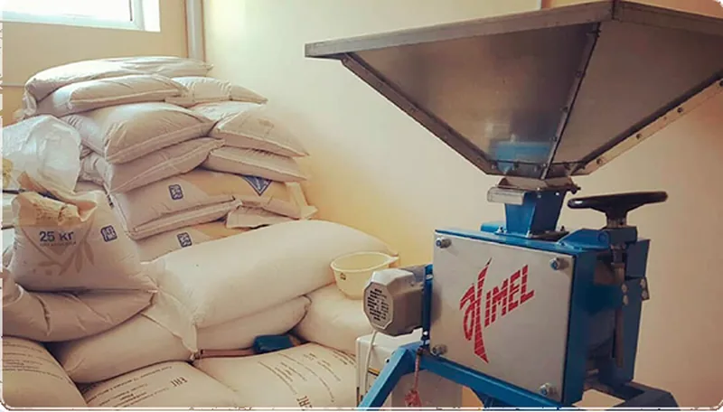

01 · Дробление
Дробление солода
Солод проходит через двухвальцовую мельницу. Мы «плющим» зерно так, чтобы раздавить ядро, но сохранить целой шелуху: на стадии затирания она станет естественным фильтрующим слоем.